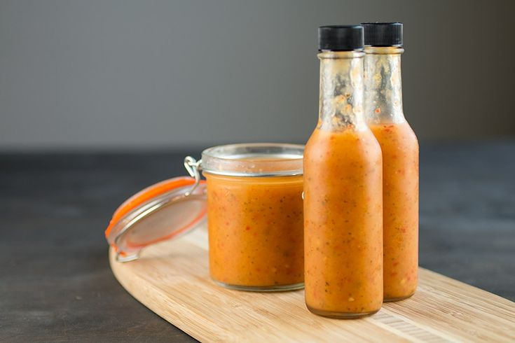

Tropical Reaper Hot Sauce

This Tropical Reaper Hot Sauce has a fruity, sweet, tangy flavor profile
that compliments the fruity, sweet, spicy flavor of the Carolina Reaper Chilli Pepper.
Ingredients
- 6 Carolina Reaper Pods, sliced in half
- 1/2 Cup Apple Cider Vinegar
- 1 Mango, sliced, remove seed
- 1 Tbsp. Lime Juice
- 1/2 Cup Pineapple Juice
- 1 Yellow Onion, sliced quartered
- 3 Garlic Cloves, skin intact
- Vegetable Oil
- 1 Tbsp. Salt
- 1 Tbsp. Ground Pepper
Procedure
- Apply about 1-2 tbsps. of vegetable oil to a skillet
- Roast the chili pods, onion, and garlic in a skillet until slightly charred
- Squeeze garlic cloves from their skin,
place chili pods, onions, mango slices, lime juice, pineapple juice, garlic, vinegar, salt and pepper into a blender
- Blend all the ingredients until you achieve a smooth texture. If some bits are still visible, that is fine.